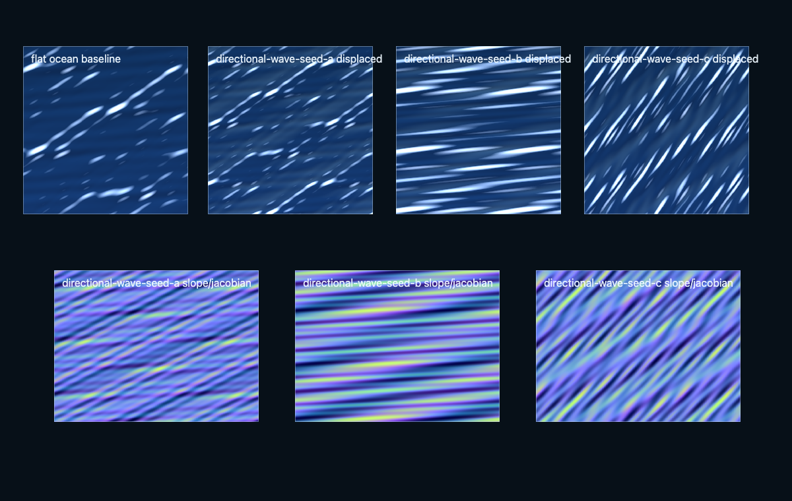
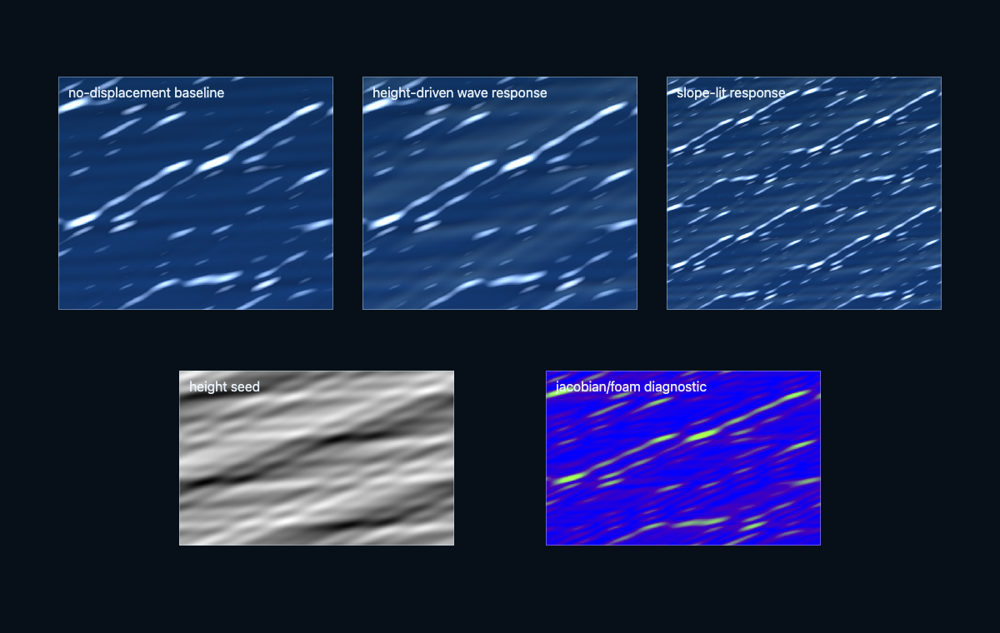
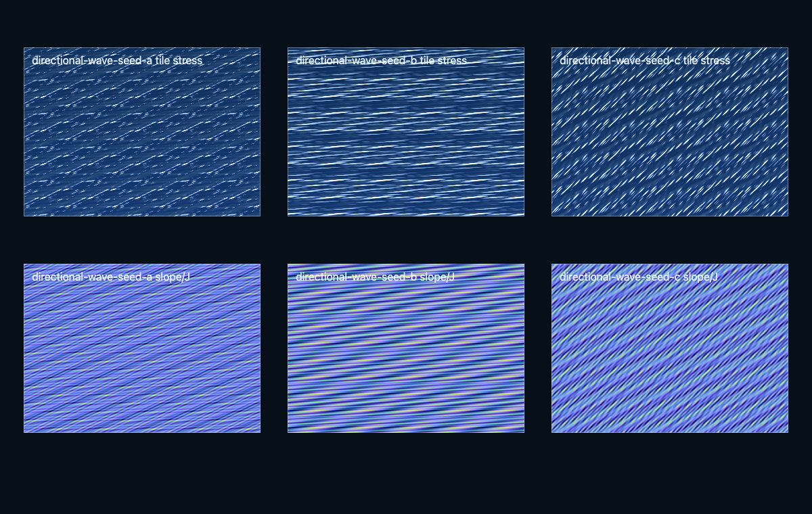

Primary implementation surface
These routes are generated from canonical source. Their exact status remains separate from implementation availability.
Build broad-band offshore procedural oceans in Three.js r185 WebGPU/TSL using dimensioned directional spectra, compute FFT cascades, StorageTexture ping-pongs, exact spectral derivatives, displaced-surface Jacobians, transported foam, water optics, CPU query bounds, falsifiable GPU evidence, and phase-resolved or phase-averaged handoff to a separate bathymetry-aware coastal owner.
These routes are generated from canonical source. Their exact status remains separate from implementation availability.
This skill contributes to the following cross-skill owner graphs.
The ocean surface is synthesized in the frequency domain (Tessendorf). A directional spectrum seeds complex amplitudes, which are evolved analytically and inverse-FFT'd per frame:
$$\tilde h(\mathbf k, t) = \tilde h_0(\mathbf k)\,e^{i\omega(k)t} + \tilde h_0^*(-\mathbf k)\,e^{-i\omega(k)t}$$The conjugate pairing enforces $\tilde h(-\mathbf k,t) = \tilde h^*(\mathbf k,t)$, so the spatial height field is real. Dispersion uses the finite-depth gravity–capillary relation — the capillary term matters at the top of the finest cascade:
$$\omega^2 = \left(gk + \tfrac{\sigma}{\rho}k^3\right)\tanh(kh)$$Choppy displacement is the horizontal gradient field $\hat{\mathbf D}(\mathbf k) = i\,(\mathbf k/k)\,\hat h(\mathbf k)$; whitecaps trigger where the deformation Jacobian folds the surface:
$$J = (1+\lambda\,\partial_x D_x)(1+\lambda\,\partial_z D_z) - (\lambda\,\partial_x D_z)^2 \;<\; J_{\min}$$Because $\mathbf D$ derives from one scalar spectrum, $\partial_z D_x \equiv \partial_x D_z$ and the single cross term is exact. Multiple cascades cover wavelength bands with half-open masks $[k_{lo}, k_{hi})$ to avoid double-counting energy at handoffs.
Every image identifies what it proves. Page screenshots demonstrate the published presentation only; generated inputs demonstrate asset channels only; canonical acceptance still requires render-target readback and a schema-v2 bundle.
4 published images



The complete SKILL.md as loaded by agents — verbatim, rendered.
Use this skill when a large, unbounded-looking water surface must span several
wavelength scales with directional wind sea or swell. The canonical state is a
sampled random field in wavevector space, evolved by dispersion and transformed
on the GPU. It assumes a horizontally homogeneous, periodic patch with one
dispersion relation per cascade. It is not a coastline, bathymetry, inundation,
or obstacle-flow solver. Use $threejs-water-optics for bounded interaction
grids, coastal coupling, or a small authored wave set.
Read references/spectral-cascade-ocean-system.md before implementation or review. For any island, coast, shoal, reef, harbor, or moving waterline, also read the coastal archipelago contract. All physics-frame, clock, provider, interaction, residency, state-version, and presentation boundaries come from the shared physics-domain and interaction contract. The FFT remains a domain solver behind those interfaces; it does not define a parallel water-query schema.
Ocean optics consumes the same typed LightingTransportSnapshot as the sky
and coastal owner. Solar-disc, sky-radiance/irradiance, segment-transmittance,
cloud, visibility, and water-extinction factors retain distinct quantity/unit/
basis and factor identities so no attenuation or direct disc is applied twice.
Radiometry is a provider boundary, not an InteractionRecord.
Every quantitative statement uses one tag:
Unlabelled integers inside exact equations, tensor dimensions, byte identities, and API names are [D]. Resolutions, patch lengths, sea-state constants, thresholds, format choices, timings, and memory limits must be tagged.
Choose FFT cascades only when the visible band contains enough independent modes that direct summation is more expensive or visibly repetitive. The decision variables are visible wavelength interval, directional statistics, periodic-repeat distance, tolerated phase/slope error, interaction needs, and sustained storage bandwidth.
| Requirement | Algorithm | Boundary |
|---|---|---|
| Few art-directed modes or exact cheap CPU queries | Parametric waves in $threejs-water-optics |
Cost grows with component count. |
| Bounded disturbances | Compute heightfield in $threejs-water-optics |
CFL and domain-boundary error. |
| Broad stochastic directional sea | Multi-cascade FFT | Periodic patches, spectral quadrature, FFT precision. |
| Spatially varying depth; phase-resolved shoaling/refraction matters | Coastal dispersive or phase-resolving solver selected by $threejs-water-optics |
Local depth, boundary, and breaking-model error; FFT is only the offshore forcing. |
| Wet/dry fronts, run-up, bores, or hydraulic jumps matter | Positivity-preserving depth-averaged coastal solver selected by $threejs-water-optics |
Conservation, wet/dry, and numerical-dissipation error; a heightfield or FFT is invalid. |
| Shoreline motion is sub-pixel and only wave statistics matter | Phase-averaged wave-action transport plus analytic display bands | No instantaneous phase contract; validate action/energy and image error. |
Do not disguise scrolling normals or a wave pile as a low FFT tier.
A wind-sea preset consumes the shared EnvironmentForcingSnapshot through an
explicit spectral-forcing adapter. It does not feed instantaneous air velocity
directly into a spectrum. The adapter records the sampled wind vector and
reference height, surface roughness/drag or another calibrated vertical-profile
model, atmospheric stability treatment, averaging window, spatial footprint,
fetch geometry, forcing duration/age, directional spreading model, and the
source-term family represented. It derives a calibrated U10 (or declares a
different named reference-height input), peak/fetch parameters, and spectral
direction in one physics frame with propagated version/error.
The input channel is the snapshot's footprint/filter-bearing airVelocityMps;
air density/pressure/temperature/stability channels remain absent unless the
selected adapter actually requires and receives them.
PhysicsGraph latches the forcing version at sample-forcing for a declared
interval. Spectrum/coefficient evolution never samples render time or a mutable
weather uniform independently.
Gust-scale forcing may modulate spray or shading, but it cannot reseed a mature
wave spectrum every frame. A stationary FFT sea freezes a documented forcing
snapshot/statistical state; an evolving sea advances a validated action/energy
source balance and preserves phase/coefficient continuity. Mean water current
remains a separate water channel and Doppler term—it is never substituted for
wind, and wind is never exposed as materialCurrentVelocityMps.
A spatially varying bottom destroys the global Fourier diagonalization used by the FFT. The spectral patch cannot, without a different solver, produce bathymetric refraction, shoaling, depth-induced breaking, diffraction around islands, reflection from cliffs, porous-reef loss, wave setup, run-up, or wetting/drying. Do not fade an unchanged deep-water FFT through the beach and label the result coastal simulation.
Choose exactly one handoff semantics:
eta_b in metres and
depth-integrated wave-discharge perturbation q'_b in square metres per
second [D]; mean-current discharge remains a separate signal.
For a matching finite-depth Airy mode,
q'_hat=(omega_int/|k|^2) k eta_hat [D], from linearized continuity
-i omega_int eta_hat+i k dot q'_hat=0 [D]. With uniform current,
omega_abs=omega_int+k dot U [D]: intrinsic frequency owns orbital
flux; absolute frequency owns the shared phase clock. The coastal boundary
injects only the incoming characteristic and retains the outgoing one. Record
phase, elevation, discharge, and reflected-wave residuals [M].P_eta(k) to physical
wavevector energy density
E(k)=[rho g+sigma_surface |k|^2]P_eta(k), where
sigma_surface is surface tension, and
transport wave action N=E/omega_int when currents vary [D]. Transfer
N, intrinsic frequency, group velocity, mean current, and dimensioned band
quadrature. The near-shore model owns refraction, shoaling, breaking loss,
and local phase synthesis. It makes no instantaneous phase-parity claim.
Record incoming, dissipated, reflected, and transmitted band energy/action
in one unit convention [M].A one-way FFT donor cannot display coastal reflection that propagates back through the coupling curve. If that outgoing field is observable, extend the phase-resolving domain or implement an explicit two-way modal projection with phase, energy, localization, and periodic-copy residuals [G,M]. An absorbing layer is valid only when the rejected reflection is below its gate.
Both modes use one PhysicsContext, stable SI physics frame, water datum,
bathymetry convention, seed or band identity, canonical PhysicsInstant
samples, and PhysicsTimeInterval transfers from registered clock mappings.
They do not introduce an independent monotonic timebase. A current U changes
absolute frequency by k dot U [D]; if U
varies materially within a periodic patch, route that region out of the FFT
instead of freezing an inconsistent dispersion.
The offshore/coastal handoff also carries the canonical
WaterSurfaceProvider envelope for every instantaneous query: mandatory
freeSurfacePoint, freeSurfaceNormal, geometricNormalVelocityMps, and the
exact WaterSurfaceParameterization, with optional fixed-parameterization
surfacePointVelocityMps, material materialCurrentVelocityMps, and only the
other channels actually represented. The generic request, response, and
channel time fields remain complete PhysicsTime wrappers. An instantaneous
water query selects kind: instant, fills instant: PhysicsInstant, and puts a
complete TypedAbsence in interval for request/response
requestedPhysicsTime, response actualBundleTime, and each instantaneous
channel's actualPhysicsTime; WaterSurfaceSample.sampleInstant remains the
raw PhysicsInstant. Descriptor, footprint/filter, frame/origin/transform,
state/resource version, validity/error, latency, and residency cross unchanged. A
phase-averaged handoff needs a separately owned display-phase synthesis before
it can satisfy this instantaneous provider ABI.
Partition ownership in every transition band. Only disjoint Fourier bins or fields proven to have zero cross-covariance may use power windows that sum to one [D,G] and square-root amplitude weights. Coherent offshore/coastal copies have a covariance cross-term: a phase-resolved wave crosses the coupling curve at full amplitude and has one spatial render owner. If a render-only spatial blend is unavoidable, its coherent amplitude weights sum to one and displacement, tangents, normals, and velocity come from the same phase-matched composite field, including blend-weight gradients. Independently lerping final normals or adding both foam histories violates parity.
Foam crosses the handoff as one versioned provider signal. Its complete
PhysicsSignalDescriptor identifies context, frame, physics-origin epoch,
transform revision, footprint/filter, cadence/latency/residency, state/resource
generation, validity, and per-channel error; canonical channels carry coverage,
carrier velocity, source rate, diffusion, and decay state at
sampleInstant: PhysicsInstant. Each channel's actualPhysicsTime selects the
arm required by its descriptor's timeSemantics: an instantaneous channel uses
the instant arm, while a source-rate channel with an actual sampling interval
uses the interval arm. The inactive arm is always a complete TypedAbsence.
Attribute whitecap and depth-breaking dissipation to exactly one owner, combine
the disjoint dissipation terms, then map them once into one foam source/history.
Never partition or saturated-add evolved coverage histories. A coordinate/atlas
ownership change uses a declared conservative state map with remap/clamp/lost-
coverage evidence, not a second independent-seconds foam tuple.
The API contract is verified against installed three@0.185.1 [G]:
WebGPURenderer, RenderPipeline, StorageTexture, and node materials come
from three/webgpu; TSL comes from three/tsl.renderer.backend.isWebGPUBackend, device limits,
or renderer.hasFeature().Fn(...).compute(...). After initialization,
renderer.compute(nodeOrArray) records ordered dispatches.
computeAsync() is initialization-safe but is not a GPU-completion fence.StorageTexture simulation data uses NoColorSpace, no generated mipmaps,
and explicit HalfFloatType or FloatType selected by validation.maxStorageTexturesPerShaderStage and compiled binding layout. The reference
fused physical assembly requires seven storage-texture bindings; use its
ordered split path with at most three per dispatch on portable four-binding
targets. Never allocate or compile the fused path before this gate.pass(), optional mrt(), and one RenderPipeline; use
PassNode.setResolutionScale(). Use exactly one output transform.const renderer = new WebGPURenderer( { antialias: false } );
await renderer.init();
if ( renderer.backend.isWebGPUBackend !== true ) {
throw new Error( 'WebGPU is required for the spectral ocean.' );
}
renderer.compute( orderedOceanNodes );
pipeline.render();
In a coupled route, every coefficient, transform, assembly, coastal-boundary,
and source dispatch that advances physical water state executes inside a
declared PhysicsGraphStage with exact interval and versioned dependencies.
The coordinator emits an exact PhysicsStageExecution for every admitted
advance or stationary analytic/state-hold evaluation; dispatch submission alone
cannot advance the provider or presentation version, and dropped debt remains
in the graph catch-up loss ledger.
The render loop consumes the sealed presentation state; it does not advance the
FFT/coastal solver, resample mutable forcing, apply runoff, or inject a private
disturbance step.
Start from a directional angular-frequency variance density
S_omega(omega,theta) with units m^2 s [D], normalized directional
distribution, and finite-depth capillary-gravity dispersion. Convert it to the
two-dimensional wavevector density
P(k_x,k_z) = S_omega(omega(k),theta)
|d omega/d k| / k, [P] = m^4. [D]
Discrete coefficient variance includes Delta k_x Delta k_z [D]. A
missing Jacobian, cell area, or Gaussian normalization invalidates sea-state
amplitude.
Cascade power windows must satisfy sum_i w_i(k)=1 over the represented band
[D,G]. Hard half-open bands are valid; smooth overlap uses amplitude
sqrt(w_i) so expected power is not doubled. Each cascade declares patch
length, grid spacing in k, isotropic upper cutoff, and repeat distance.
Write the transform pair in code and tests. This skill uses the unnormalized inverse convention
f[j] = sum_n F[n] exp(+i 2 pi n dot j / N). [D]
With this convention a unit DC coefficient produces a unit constant field. Any normalized IFFT must rescale initial coefficients consistently. Never tune spectrum amplitude around an undocumented FFT scale.
Pack the eight real fields required for height, horizontal displacement,
slopes, and horizontal derivatives into four complex transforms, preferably as
two complex lanes in each of two RGBA textures [D]. Validate the algebra
G=A+iB, not component interleaving.
The evolved height spectrum must satisfy
H(-k)=conjugate(H(k)) [D]. DC and self-conjugate Nyquist cells are real.
Derivative multipliers receive parity-specific masks:
k_x are zero on the k_x Nyquist line;k_z are zero on the k_z Nyquist line;Zero k=0 before every division by |k|. Do not multiply a singular result by
a zero mask and call it safe.
For the declared inverse-transform sign, choose the horizontal displacement
sign by a one-mode test. This skill defines positive choppiness chi so
h=a cos(kx) maps to X=x-chi a sin(kx), compressing the crest [D].
Sum displacement and derivatives across cascades before forming the horizontal Jacobian. For
P(q) = (q_x + chi D_x, h, q_z + chi D_z),
compute P_qx, P_qz, the determinant, and
normalize(cross(P_qz,P_qx)) exactly. Do not divide each height slope by only
its same-axis stretch; that omits cross coupling. A nonpositive determinant is
a fold, not a normal-map detail.
Compression may source foam, but a thresholded Jacobian is not persistent foam. Use a bounded, timestep-correct source/decay update and declare whether the history lives in Lagrangian parameter coordinates or is advected in an Eulerian/stable-physics-frame atlas. Include transport, dissipation, and source terms in diagnostics. Display thresholding is separate from state evolution.
Expose parametric sampling separately from physics-horizontal sampling. A
dominant-bin CPU sum approximates the same seeded coefficients and dispersion;
its omitted-coefficient triangle bound applies at fixed parameter coordinate.
When choppy horizontal displacement is nonzero, a physics-frame (x,z) query must also
invert the horizontal map. The reference derives the additional inversion
error and the condition under which it is bounded.
The raw numerical sampler may return its solver-specific diagnostics:
{
height,
normal,
horizontalResidual,
omittedCoefficientBound,
numericalErrorMeasured,
status,
}
The omitted bound [D], solver tolerance [G], and GPU-versus-CPU probe
error [M] are distinct fields. A public physics consumer never receives
that raw shape. The spectral adapter publishes the canonical WaterSurfaceProvider
sample as one exact WaterSurfaceSample; its descriptor, sample instant,
parameterization, required channels, optional typed absences, footprint/filter,
validity, and correlated per-channel error remain one atomic bundle. Its
physics-frame-metre channels are freeSurfacePoint, freeSurfaceNormal,
geometricNormalVelocityMps, its exact WaterSurfaceParameterization,
optional fixed-coordinate surfacePointVelocityMps, optional
materialCurrentVelocityMps, optional
waterColumnDepthMeters and densityKgPerM3. Each named channel is a complete
shared SampledChannel; the parameterization remains its own exact canonical record.
The result returns the complete shared
PhysicsSignalDescriptor, bundle sampleInstant, and each channel's
actualPhysicsTime. For an instantaneous water query, request and response
generic time fields use the complete instant-selected PhysicsTime wrapper,
while bundle sampleInstant remains a raw PhysicsInstant. The requested and
returned actual instants remain distinct and may differ only within declared
latency/staleness gates. Unrepresented current,
depth, or density channels are absent under
missingChannelPolicy, not zero. The adapter composes coefficient omission, horizontal inversion,
floating-point, transform/probe, filtering, and latency error without
collapsing them into a false scalar certainty. Do not read the full FFT maps
back in the frame path.
The remaining canonical optional channels—material acceleration, pressure,
bathymetry point, and wet/dry state—are likewise absent unless a named model
supplies each with actual support and error.
surfacePointVelocityMps is a physical polar vector bound to the serialized
surface gauge; only its normal projection is geometric. Whenever that optional
vector is present, the exact identity is
geometricNormalVelocityMps = dot(surfacePointVelocityMps, freeSurfaceNormal) at the same actual time, support/filter, and state version;
its channel propagates correlated vector/normal error. The scalar normal speed
is gauge invariant and remains a mandatory publication even when a
reduced/implicit owner cannot publish the full fixed-coordinate vector. The
material-current vector is independent of that parameterization. Both vector
channels are in physicsFrameId, not moving-frame coordinate rates. Cross-frame
transport rotates their basis; it does not add origin or omega x r transport
terms to an already physical vector.
The homogeneous spectral patch may drive one-way bodies through this provider
only when the authoritative source is named and omitted body-to-water feedback
has a [G] upper bound or the claim/regime is explicitly narrowed.
An explicitly selected spatial interaction solver packages body/water coupling
as one SurfaceExchange. Its source and reaction InteractionRecord entries
carry dimensioned payloads, exact application intervals, physical footprints,
target equations, state versions, and exact-once application-ledger keys.
It does not accept two-way body/source InteractionRecord feedback unless an
explicit spatial interaction solver owns that region; route such loads through
$threejs-water-optics or a canonical ExternalSolverAdapter. Rendering uses
the shared presentation lifecycle: the spectral owner publishes its
PresentedStatePair through a view-independent
PhysicsPresentationCandidate. The candidate contains no camera or render
transform. previousPresented and currentPresented each
carry independent PresentationSampleProvenance, presentedInstant, state
handle, and global spatial binding. The camera owner publishes
CameraViewPublication; preparation owners publish
ViewPreparationPublication; the sealed PhysicsPresentationSnapshot
references candidate binding IDs and lease refs. FrameExecutionRecord records
multi-target execution and lease disposition keyed by lease ID. The presented
spectral states are not assumed solver n/n+1, so
displacement, exact tangents, velocity, shadows, foam, and temporal history
resolve one pair with independently provenanced presented states and separately
tracked instant/frame/transform/source epochs.
Spectral deformation, foam, coefficient, and optical discontinuities contribute
scoped reactive epochs/regions for the per-view ReactivePublication and
ScopedResetAction plan in ViewPreparationPublication; reset flags are not
extra pair or snapshot fields.
Do not publish generic mobile/integrated/discrete timing tables. For each named target, declare the scene, viewport, DPR, resolution, cascade bands, precision placement, active foam/optics, warm-up, sample window, power state, and pass/fail threshold [G] before measuring [M].
Keep a complete resource ledger and report warm percentile timings, per-stage
bandwidth, peak live bytes, allocation churn, and thermal drift [M]. One
RGBA16F texture consumes 8 N^2 bytes [D] and one RGBA32F texture
consumes 16 N^2 bytes [D]. Derive quality tiers only from named-target
measurements.
Batch WaterSurfaceProvider requests as compact channel-masked SoA. A
presentation candidate references immutable resource generations under a
frame-in-flight lease/reuse rule; it does not deep-copy FFT maps, and the next
compute update cannot overwrite a generation still consumed by rendering.
Any physics-facing change to represented spectrum, solver representation,
coastal ownership, cadence, provider filter/error, or active domain uses a
coordinator-admitted QualityTransition and commits at a scheduler tick with
state/energy projection, atomic provider/resource generation, queue boundary,
history action, rollback, and peak simultaneous residency. A visual crossfade
never gives two representations interaction or reaction ownership. Render-only
mesh/post sampling changes do not mutate the physical provider.
For bandwidth-constrained tile GPUs, prefer a workgroup-resident one-dimensional FFT plus transpose when device workgroup storage and invocation limits admit the chosen row representation. Otherwise use the global Stockham reference path. The accepted kernel is the fastest one that passes the same transform, precision, and occupancy gates; algorithm names alone are not evidence.
Resolved display maps may use half-float only after comparison with the float FFT reference [M]. Repeated half-float quantization at every FFT stage is a different and stricter error case than storing only resolved maps in half-float.
WaterSurfaceProvider conformance, footprint/filter response,
absent-channel handling, state-version/error propagation, mandatory
geometricNormalVelocityMps projection identity, valid absence of optional
full surfacePointVelocityMps, and zero frame-critical readback;For every coastal composition also require:
Fail the implementation if any coefficient has ambiguous units, FFT normalization is implicit, a Nyquist parity rule is missing, half precision is assumed accurate, the normal is not the cross product of displaced tangents, foam has no transport semantics, a homogeneous periodic FFT is treated as a coastal solver, handoff power is double-counted, coherent copies are square- root weighted as if independent, or a performance number lacks provenance.
This skill owns offshore homogeneous spectral synthesis, exact spectral
derivatives, displaced-surface geometry, and deep-water whitecap state. The
coastal owner supplies bathymetry-aware propagation, boundaries, interaction,
breaking, wet/dry state, and shore foam. The spectral implementation remains a
forcing producer and render contributor outside that domain; it does not gain
coastal ownership by sampling a depth texture in its material. It implements
the shared WaterSurfaceProvider and presentation contracts but rejects unsupported
two-way InteractionRecord loads rather than fabricating an offshore response.
Preserved concept proxies and generated-asset previews. They are excluded from primary completion counts and link to the canonical lab through the schema-v2 registry.